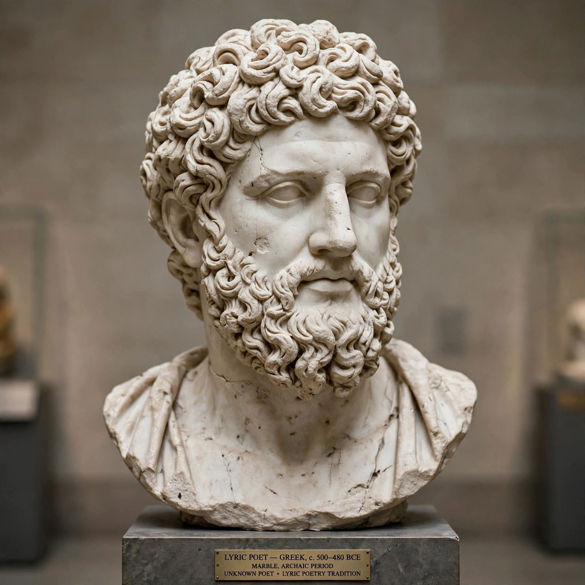

| Born | c. 518 BC, Cynoscephalae, Boeotia |
|---|---|
| Died | c. 438 BC, Argos |
| Occupation | Lyric poet |
| Language | Ancient Greek (Doric literary dialect) |
| Genre | Choral lyric; epinician odes |
| Notable works | Victory odes: Olympian, Pythian, Nemean and Isthmian odes |
Pindar (c. 518 – c. 438 BC) was an Ancient Greek lyric poet from Thebes. Of the canonical nine lyric poets of ancient Greece, his work is the best preserved. Quintilian called him "by far the greatest of the nine lyric poets, in virtue of his inspired magnificence, the beauty of his thoughts and figures, the rich exuberance of his language and matter".

Pindar, the greatest of the Greek choral lyric poets.
Born into a Boeotian aristocratic family near Thebes, Pindar studied music in Athens and began winning commissions as a young man. He wrote for patrons across the Greek world, including the tyrants Hieron I of Syracuse and Theron of Acragas, and the kings of Macedon and Cyrene. Tradition holds that Alexander the Great spared Pindar's house when he destroyed Thebes in 335 BC, out of respect for the poet's praise of his ancestor Alexander I.
Ancient scholars arranged Pindar's poetry into seventeen books of hymns, paeans, dithyrambs, maiden-songs and victory odes. Only the four books of epinikia — odes celebrating victors at the Olympic, Pythian, Nemean and Isthmian games — survive complete, 45 odes in all. The odes weave praise of the victor with myth, gnomic wisdom and prayer, in triadic structures of strophe, antistrophe and epode, performed by a chorus with music and dance.
Pindar's style is dense, elevated and famously difficult, marked by bold metaphors and abrupt transitions. The English "Pindaric ode" — developed by Abraham Cowley and used by Dryden and Gray — imitated his freedom, while Horace compared his torrent-like genius to a river bursting its banks.